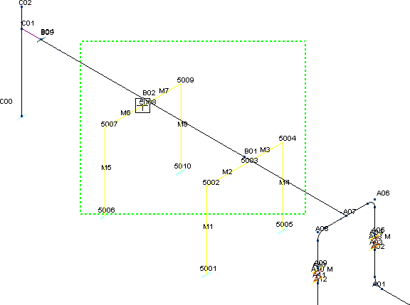
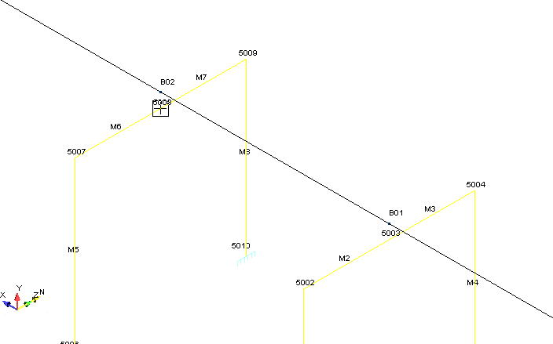
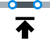
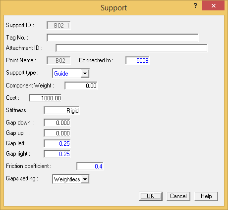
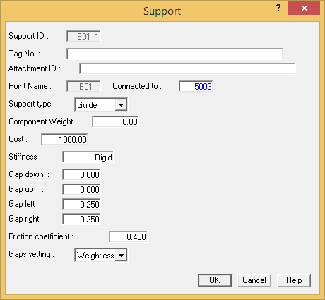
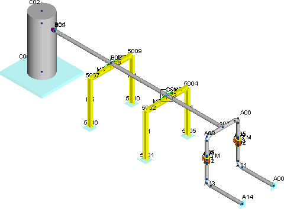

Connecting the Frame to Pipe
In this section we’ll insert 2-point supports in order to define the connection between the piping and the structural frames. Understanding the capabilities of a 2-point support is an important concept when defining pipe/structure interaction since pipes may lift off a support rack or have gaps and/or exert friction forces on the support structure.
1. Sometimes it is easier to select points that are placed close together in the model by switching to a line mode view of the model. Select View > Mode > Single Line View to display the model as shown below.
Window this area and Zoom In.
- Pick the two points shown in the graphic above to define the perimeter of the zoom window, then select View > Zoom-Pan > Zoom In. Your model view should appear similar to the one shown in the following figure.

- You will now add a support at B02. First, pick point B02 to make it the active point.
- Select Insert > Supports > Support.
- The Support dialog is displayed as shown below. A U-bolt will attach the pipe to the frame. The U-bolt will have gaps of .25 inch {5} mm to the left and right of the pipe. Since the pipe is sitting on the frame we will also model the friction between the pipe and frame. Since the U-bolt supports perpendicular directions to the pipe, we use AutoPIPE's Guide support. Select Guide from the Support Type field.

| Note: |
Note that additional fields are presented once you enter Guide as the Support Type and the cursor advances to the next field. AutoPIPE makes frequent use of these “filtered” dialogs to request only the information pertinent to the type of component that you have selected. |
- By default the guide is connected to the ground. We instead wish to connect the guide to the center of the top beam of the support structure at point 5008. Input 5008 in the Connected to field. This is the beam point just below piping point B02.
- In the Gap left and Gap right fields, input a value of 0.25 (inches) {5} mm. This will specify the gap on both the left and right sides to allow for movement of the pipe between the U-bolt.
- Input a Friction coefficient of 0.4 to consider pipe friction on the support frame.
- Press OK to close the dialog.
- You will add an identical support at B01. Pick point B01 to make it active, and then select Insert
> Supports > Support to re-open the Support dialog. Note that all defaults are correct and the only required input is to specify a new Connected to point of 5003. When the dialog appears as shown below, press OK to define the second support.

- Both supports have been added to connect the frame to the piping as shown in the following figure.
The two supports are added to the system.
- You will now complete this section by zooming to the extents of the model and restoring the 3D view. Select View > Zoom-Pan > Zoom Extents.
- Select View > Mode > Solid Model View. The model appears as shown below.

-
.jpg) Select File > Save
> Save.
Select File > Save
> Save.